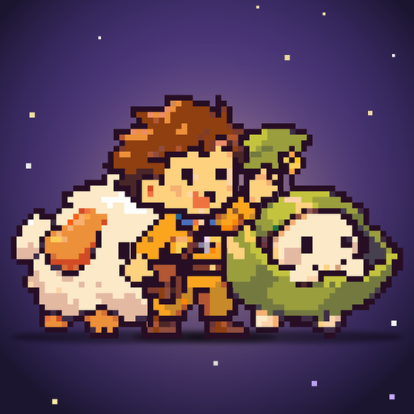
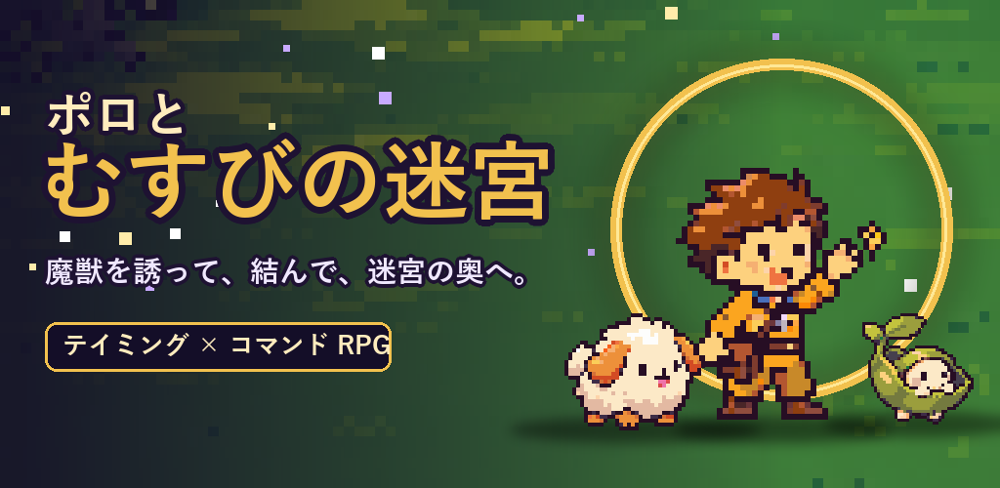
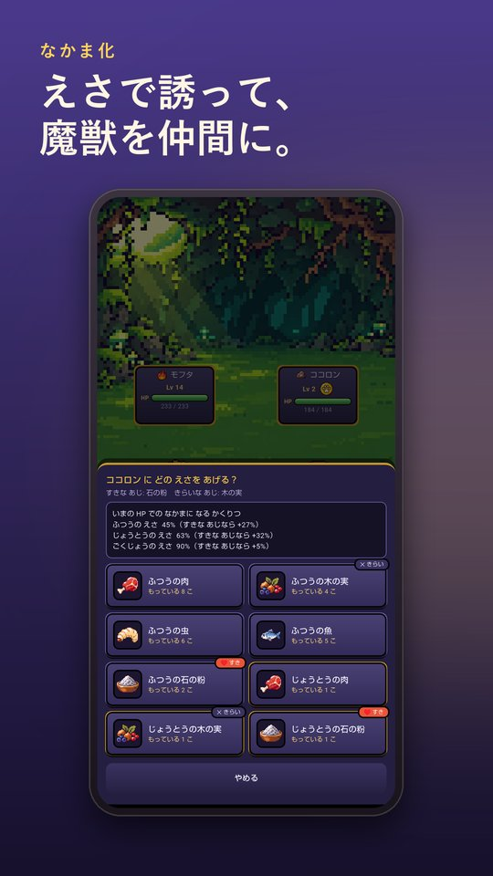
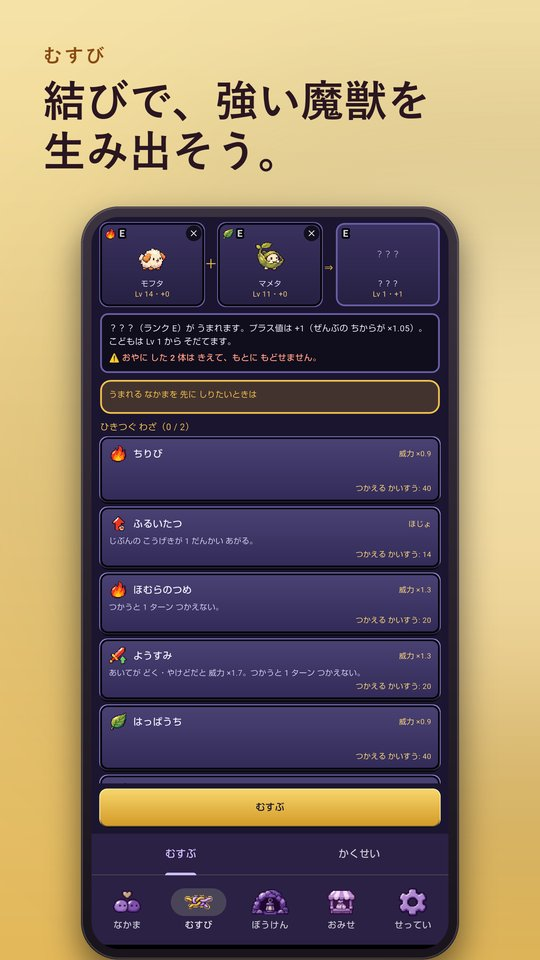
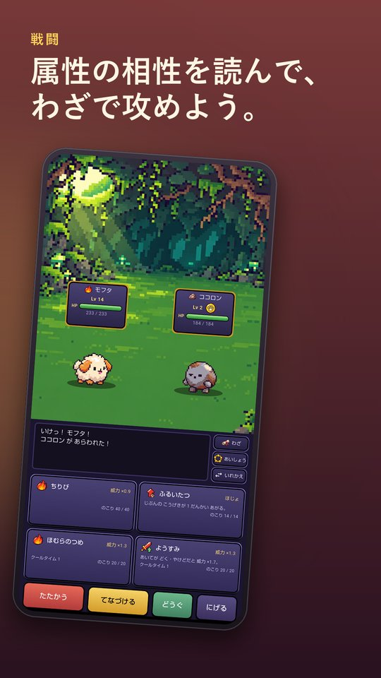
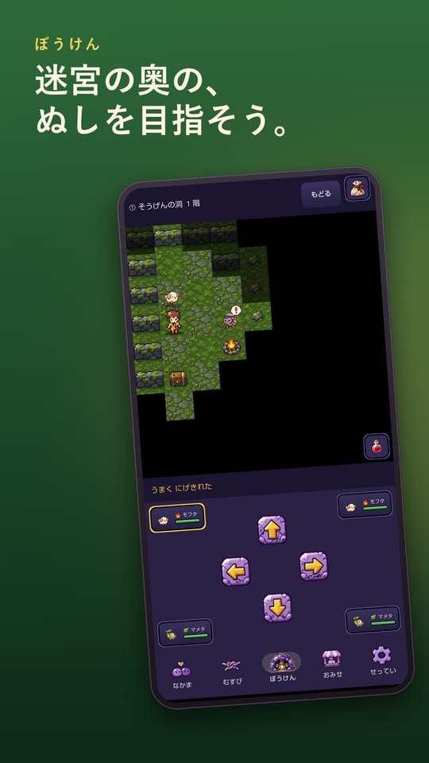
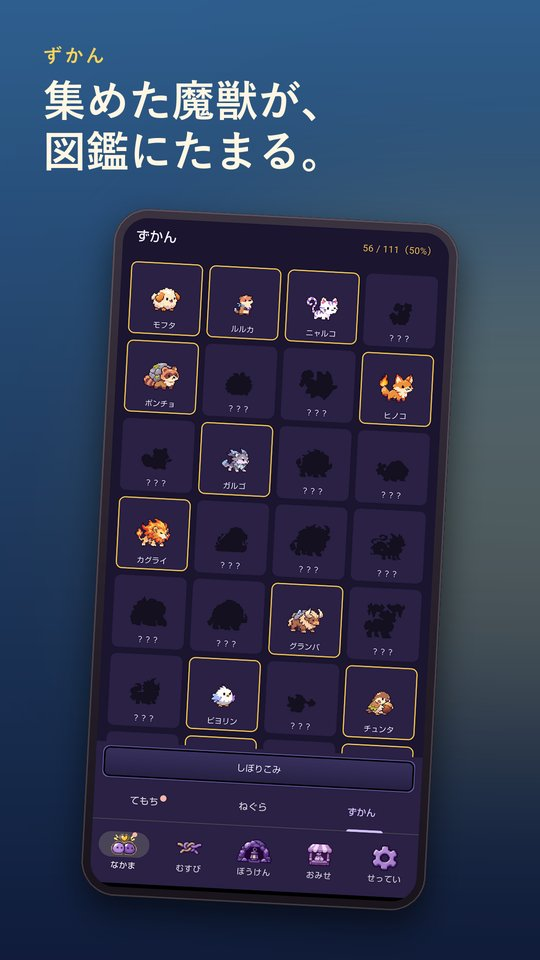
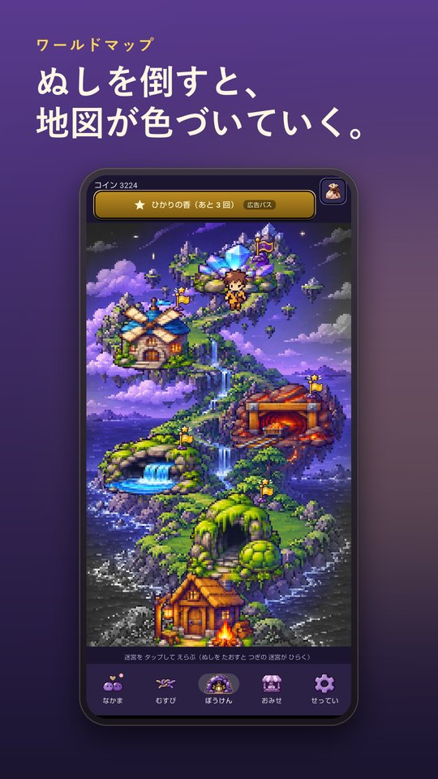

POLO TO MUSUBI NO MEIKYU
魔獣を誘って、結んで、迷宮の奥へ。Lure, fuse, and go deeper into the labyrinth.
ポロと一緒に迷宮を進み、えさで魔獣を仲間にして、「結び」で強くしていく、ドット絵のコマンド RPG です。Explore labyrinths with Polo, befriend monsters with bait, and make them stronger through "fusion" in this pixel-art command RPG.

How to play
迷宮で出会った魔獣を弱らせて、「てなづける」。えさをあげると、仲間にできます。好みの味のえさほど、仲間になりやすくなります。Weaken a monster you meet in the labyrinth and "tame" it. Give it bait to make it an ally — bait to its taste works better.

2 体の魔獣から、新しい魔獣を生み出します。結果は運でなく決まっているので、親を選んで、狙った魔獣を作れます。Create a new monster from two. The result is fixed, not random, so you can pick parents to aim for the monster you want.

属性の相性を読んで、わざで攻めましょう。迷宮の奥にいる「ぬし」を倒すと、次の迷宮が開きます。Read the elemental matchups and attack with your moves. Defeat the boss at the back of a labyrinth to open the next one.

Features
宝箱やたき火、階段、そして魔獣との出会いが待っています。迷宮は 5 つ。探索は、いつでも切り上げられます。Chests, campfires, stairs and monster encounters await. There are five labyrinths, and you can wrap up an expedition at any time.
わざには属性があり、相性のいい属性で攻めると大きなダメージを与えられます。Moves have elements, and attacking with a favorable element deals more damage.
魔獣を弱らせて「てなづける」と、えさをあげて仲間にできます。パーティの並び順や、控えとの入れかえで、戦い方を変えられます。Weaken and tame a monster, then give it bait to make it an ally. Change how you fight by reordering your party and swapping with reserves.
「結び」で生まれる魔獣は決まっているので、親を選んで、狙った魔獣を作れます。強くなったわざは、別の魔獣に引き継げます。The monster a fusion creates is fixed, so you can choose parents to aim for what you want. Strengthened moves can be passed on to another monster.
レベル上限に届いた魔獣は「かくせい」で、固有わざが強くなります。まれに現れる、色違いの「かがやき」も探そう。A monster at its level cap can awaken to strengthen its signature move. Look for the rare color variants called "Kagayaki", too.
集めた魔獣は図鑑に記録されます。図鑑を埋めると、ごほうびがもらえます。The monsters you collect are recorded in the encyclopedia. Filling it earns you rewards.
各迷宮の奥には「ぬし」が待っています。ぬしとは、「きずなの儀式」で、仲間になる道もあります。A boss waits at the back of each labyrinth. You can also befriend a boss through the "ritual of bonds".
ぬしを倒すと、ワールドマップが少しずつ色づいていきます。放置で進むことはなく、遊んだぶんだけ進みます。Defeating bosses fills the world map with color little by little. Nothing progresses on its own — you advance by playing.
登録なしですぐ遊べます。任意で Google にログインすると、データをクラウドに保存し、別の端末へ引き継げます。You can start playing without registering. If you like, sign in with Google to save your data in the cloud and move it to another device.
Screenshots
← スワイプまたはスクロールで確認できます← Swipe or scroll to see more



Story
個人で開発しています。仲間を集めて、育てて、組み合わせを考える楽しさを、ドット絵のあたたかい世界でじっくり味わえるように作りました。This game is developed by an individual. We wanted you to savor the fun of collecting allies, raising them and working out combinations, in a warm pixel-art world.
ガチャのような、運に頼る課金要素はありません。強さを売ることもしません。広告は、画面上部のバナーと、自分で選んで見る動画などです。見なくても遊べます。詳しくはプライバシーポリシーをご覧ください。There is no gacha or any luck-based payment, and we do not sell strength. Ads are limited to a banner at the top and videos you choose to watch — you can play without watching. See the Privacy Policy for details.
こんな方に使っていただけたら嬉しいです。We hope you will enjoy it if you are:
FAQ
Contact
不具合の報告、機能のご要望、ご質問はお問い合わせフォームから受け付けています。Send bug reports, feature requests and questions through the contact form.
お問い合わせフォームへ →Go to the contact form →